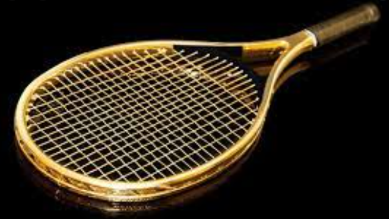
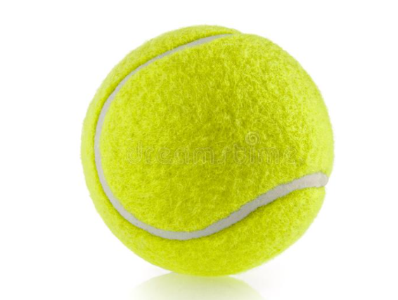
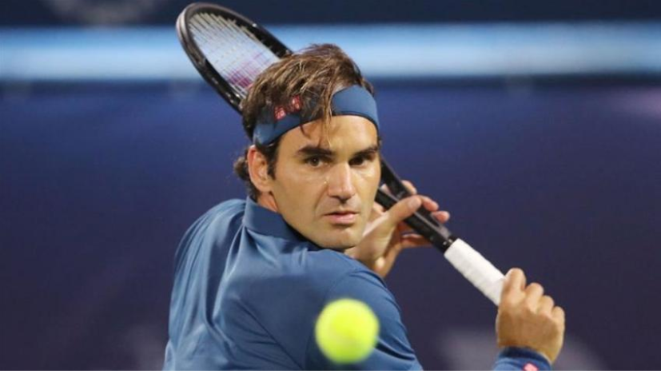
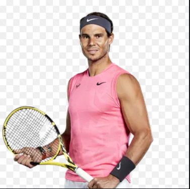
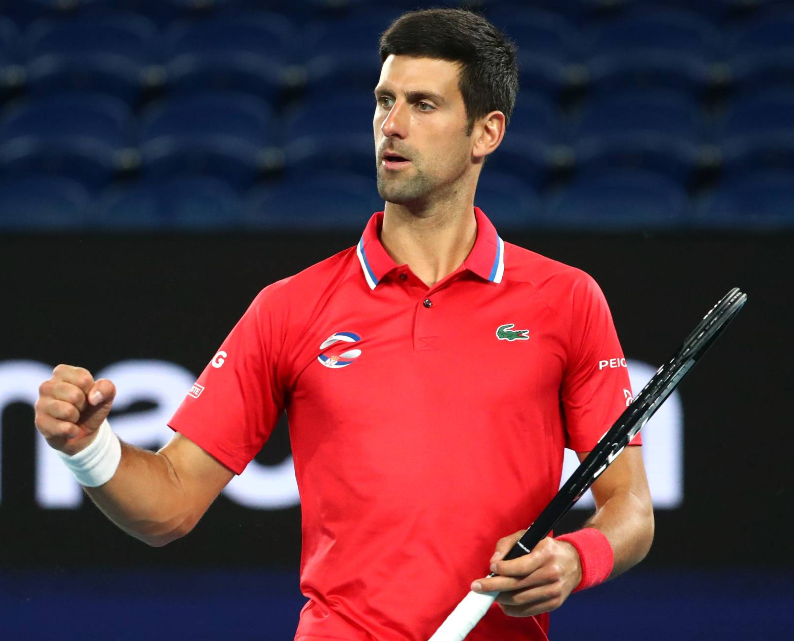
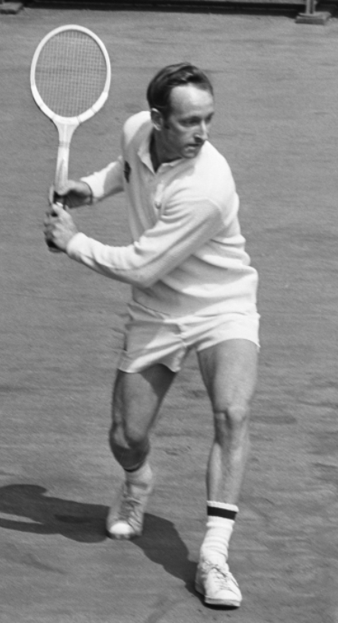
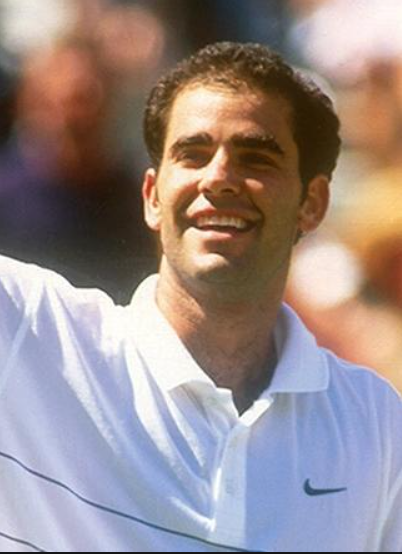

Tennis is a racket sport that can be played individually against a single opponent (singles) or between two teams of two players each (doubles). Each player uses a tennis racket that is strung with cord to strike a hollow rubber ball covered with felt over or around a net and into the opponent's court. The object of the game is to maneuver the ball in such a way that the opponent is not able to play a valid return. The player who is unable to return the ball will not gain a point, while the opposite player will.
Tennis is an Olympic sport and is played at all levels of society and at all ages. The sport can be played by anyone who can hold a racket, including wheelchair users. The modern game of tennis originated in Birmingham, England, in the late 19th century as lawn tennis. It had close connections both to various field (lawn) games such as croquet and bowls as well as to the older racket sport today called real tennis. During most of the 19th century, in fact, the term tennis referred to real tennis, not lawn tennis. The rules of modern tennis have changed little since the 1890s. Two exceptions are that from 1908 to 1961 the server had to keep one foot on the ground at all times, and the adoption of the tiebreak in the 1970s. A recent addition to professional tennis has been the adoption of electronic review technology coupled with a point-challenge system, which allows a player to contest the line call of a point, a system known as Hawk-Eye. Tennis is played by millions of recreational players and is also a popular worldwide spectator sport. The four Grand Slam tournaments (also referred to as the Majors) are especially popular: the Australian Open played on hard courts, the French Open played on red clay courts, Wimbledon played on grass courts, and the US Open also played on hard courts.
| Equipment | Explain | shape |
|---|---|---|
| Rackets | The components of a tennis racket include a handle, known as the grip, connected to a neck which joins a roughly elliptical frame that holds a matrix of tightly pulled strings. |
 |
| Balls | Tennis balls were originally made of cloth strips stitched together with thread and stuffed with feathers. Modern tennis balls are made of hollow vulcanized rubber with a felt coating. Traditionally white, the predominant colour was gradually changed to optic yellow in the latter part of the 20th century to allow for improved visibility. |
 |
Tennis is great fun and is accessible to all ages and skill levels. But there are other benefits to picking up a racket and playing As well as serving up plenty of smiles, tennis is good for your physical and mental health. It can help lower body fat while improving muscle toning, strength and flexibility. It can even help you to live longer. In terms of mental health, exercise is hugely important in maintaining a good state of mind. Playing a game of tennis will release those happy endorphins to help you feel great! It is also a fantastic way to spend some time with family and friends and will provide you with the opportunity to meet new people.
| Name | career | picture |
|---|---|---|
| Roger federer |
Federer was only 19 when he seized his 2001 fourth-round Wimbledon upset against seven-time champ |
 |
| Rafael nadal |
King of the clay with 13 French Open titles under his belt, and twenty grand slam titles in total, |
 |
| Novak djokovic |
Djokovic’s victory over Federer in the 2014 Wimbledon final made him – not Rafael Nadal – the first |
 |
| Rod laver |
He is the only player to have twice won the Grand Slam, doing it once as an amateur in 1962 and |
 |
| Pete sampras |
Pete's place in tennis history is difficult to judge as he only won three of the four Grand Slam |
 |